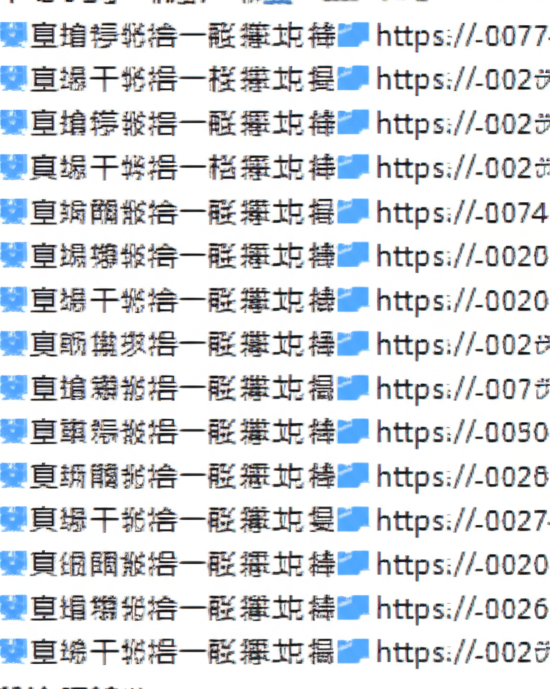

# 2025 年 5 月行事曆及活動資訊綜覽
## 引言
本文綜覽了 2025 年 5 月初與近期發布的各類行事曆、活動資訊以及相關新聞，涵蓋了 IT 產業、金融投資、資安、BDSM 社群、教育、貿易、運動賽事等多個領域。希望能為讀者提供一個快速了解近期重要活動和資訊的窗口。
## 主體內容
### 第一點：科技與商業活動聚焦
iThome Online 力邀參加 7 月 2 日的 Kubernetes Summit 2025，聚焦 AI 與雲端未來。Anue 鉅亨報導了科技巨頭重燃 AI 樂觀情緒，股市上漲。ACCUPASS 活動通提供了豐富的活動資訊，涵蓋論壇、展覽、講座等。Taiwantrade 台灣經貿網則利用 AI 助手和商業智慧工具，幫助用戶掌握資料整理和分析。這些資訊顯示，科技產業持續蓬勃發展，AI 仍然是關注焦點。
### 第二點：投資理財與房地產趨勢
Sinotrade 整理了 2025 年 5 月 ETF 配息行事曆，包含國內指數股票型及債券指數股票型 ETF 的除息日等資訊，反映了 ETF 作為分散風險工具的受歡迎程度。Anue 鉅亨的房地產新聞顯示，全台非都會區縣市去年 Q4 核貸量縮水。投資者應關注市場波動，謹慎評估風險。
### 第三點：生活休閒與社群活動
運動筆記整理了 2025 下半年自行車賽事行事曆，鼓勵運動愛好者參與。BDSM Calendar 則提供了台灣 BDSM 活動行事曆，共享社群活動資訊。臺南市大橋國小及國立屏東科技大學圖書館也公布了相關的行事曆資訊。這些資訊涵蓋了不同興趣愛好者的需求，豐富了生活休閒選擇。
### 第四點：資安議題與隱憂
iThome 資安新聞回顧了 2025 年 4 月第四星期的資安事件，包括長慎醫院、萬海航運、萬潤科技、倍力資訊等機構遭受的攻擊，警示企業和個人需要加強資安防護意識。
## 結論
綜上所述，2025 年 5 月的活動資訊呈現了多元化的趨勢，科技產業持續創新，投資理財需謹慎評估，生活休閒活動豐富多彩，資安議題不容忽視。建議讀者根據自身需求，關注相關資訊，做好規劃和準備。